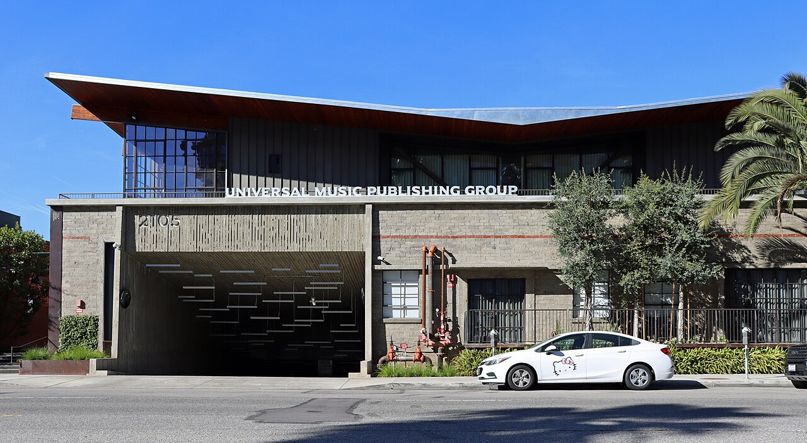

Vol. I · No. 113 · Wednesday, September 16, 2026 · 16 items · ~14 min read
A ten-year yield last seen in 2007, hours before a Fed that has not raised rates since 2023.
Markets · Washington and New York
The ten-year broke five percent on the morning the Fed votes to raise rates
The Eccles Building, where the Federal Open Market Committee began a two-day meeting on Tuesday. — Federal Reserve via Wikimedia Commons, public domain
The ten-year Treasury note traded as high as 5.04 percent on Tuesday and settled the day on the Treasury's official at exactly 5.00 percent, the first five handle on the benchmark since July 2007. It was the fifth consecutive session of rising yields. Two-year paper closed at 4.67 percent, the five-year at 4.83, the seven-year at 4.91, the twenty-year at 5.40 and the thirty-year at 5.36, leaving the ten-year over the two-year at 33 basis points and the thirty-year over the ten-year at 36. Tuesday's twenty-year auction stopped at a high yield of 5.420 percent, roughly half a basis point above the , a modest enough to read as soft demand rather than a buyers' strike.
The day's one hard economic print cut both ways. The New York Fed's headline fell to 7.6 in September from 20.6 in August, badly missing a consensus near 14.75. Its prices-paid index went the other way, rising five points to 63.1 and sitting near a four-year high, with prices received up five to 28.1. Softening output alongside accelerating input costs is the combination that makes a central bank's job hardest, and it landed less than twenty-four hours before the vote. CME's tool showed the market pricing an 84 to 86 percent chance of a 25 basis point increase to 3.75 to 4.00 percent at 2pm Eastern on Wednesday, which would be the first hike since July 2023.
Two of the paper's other items descend directly from this number. Axon priced a billion dollars of zero-coupon convertible paper on Tuesday, a structure that exists precisely because a company will pay a 47.5 percent conversion premium rather than pay a coupon at these levels. Brent sat near $107.82 with Saudi Arabia's principal Hormuz bypass still shut, which is the supply shock feeding the prices-paid line above. A five percent risk-free rate is the discount rate under every leveraged buyout model, every convertible, and every pipeline of deals now being pitched into the fourth quarter.
Law · Washington · cross-spectrum LLCR
A judge blocked Trump's name from the Kennedy Center, and the board voted the same day to close the building
Judge Christopher R. Cooper of the federal district court in Washington ruled on Tuesday that the board may not put President Trump's name on the building's facade. Cooper had already ordered the name removed in May; the board voted again in August to add it, and the September order addresses that second attempt. He called the maneuver "linguistic gymnastics" and held that the resolution "bucks a federal court order and a statute Congress enacted." On the board's argument that the naming secures the institution's finances, Cooper wrote that the government offered "no proof that current or future donations hinge on President Trump's being on the building," and "no competent proof that removing the Trump name would prevent the Center from fulfilling its artistic mission." The operative line: "Simply put, Defendants cannot install memorials for President Trump or anyone or anything else at the Kennedy Center without Congress's blessing."
Hours later the board, which Trump reconstituted and chairs, voted unanimously to close the main building for two years and approved a $257 million renovation. It cited "dire" finances, "certain fiscal collapse within weeks," and a partial ceiling collapse in the grand foyer caused by a water leak that it said renders the building "unsafe for continued occupancy." Trump called into the meeting. He then posted that the closure takes effect immediately but that reconstruction cannot begin until the D.C. Circuit rules on the naming dispute, and will not proceed at all if that ruling goes against him and is not overturned by the Supreme Court. The underlying case is DC Preservation League v. Board of Trustees, No. 1:26-cv-00981, filed in March on and grounds among thirteen counts.
AI · New York and Los Angeles
Huang calls the antitrust waiver "completely unnecessary" as the pacing pact splits its own industry
Nvidia's Jensen Huang told CNBC's Jim Cramer on Tuesday that the central ask in Dario Amodei's "We Must Pace the Frontier" essay is not needed. "The fact that we need new laws, new antitrust laws, or new regulations, so that these companies could do their fundamental engineering and do it properly before they release products, that is just completely unnecessary," Huang said. Amodei's essay, published on his own site on September 12, proposed that frontier labs deliberately slow capability gains, install with employee-level access, and that Washington "issue a narrow waiver for certain kinds of safety conversations" because the coordination is otherwise "legally challenging." Mark Zuckerberg joined Huang the same day, writing that "every lab has the responsibility and incentive to move at the pace required to train its models safely" and noting that Meta delayed shipping its Muse models on its own initiative without being asked.
The waiver question is the load-bearing one, and OpenAI has now taken a third position. Its global policy chief told Bloomberg on Tuesday that OpenAI, Anthropic and Google DeepMind have been coordinating on safety for several weeks and that no waiver is necessary, pointing to airlines sharing safety-relevant information among competitors. White House AI czar David Sacks was blunter: "Stop pretending you need anyone else's permission. Stop pretending antitrust law has to be suspended so you can form a cartel." Alvaro Bedoya countered that a 2014 joint DOJ and FTC statement already treats properly designed cyber-threat information sharing as raising no serious concern, which is a different thing from exchanging data on price or output. That distinction is the whole case under : an agreement to release fewer or later models looks like output restriction, and output restriction is the category courts refuse to hear excuses about.
Artificial Intelligence
A rule relaxed inside Google, and a foreign ministry answering a chief executive by name.
AI · Mountain View
Google opened Anthropic's Claude Opus 5 to every one of its engineers
The Googleplex in Mountain View, where a Gemini-only rule for internal development has been relaxed. — Wikimedia Commons
Google has made Anthropic's Claude Opus 5 available to all of its engineers through , its internal development platform, according to reporting by Hugh Langley of Business Insider on Tuesday. Access had previously been confined to selected teams inside Google DeepMind and a small number of priority projects, with most staff barred from external coding tools including Anthropic's own Claude Code and OpenAI's Codex. Engineers still cannot run Claude Code itself; they select the model from within Antigravity and draw against a personal quota. A Google spokesperson held the line that "Gemini remains our primary and foundational model for internal development," with third-party models available on quota "to support specialized use cases."
The reported reason is the uncomfortable one. Some Google engineers had come to regard Gemini's coding performance as trailing Anthropic's and OpenAI's, and the company relaxed a longstanding internal exclusivity rule rather than absorb the productivity gap. The arrangement also sits oddly beside the commercial relationship: Google is simultaneously one of Anthropic's largest compute partners, having expanded that arrangement alongside Broadcom this same month, and its most direct competitor at the frontier. Sourcing caveat carried on its face: the original reporting is behind Business Insider's own wall and this item is built from trade republication of it, so the quota mechanics are as reported rather than as confirmed by Google.
AI · Beijing · cross-spectrum LLC
China's foreign ministry answered Amodei by name, calling the chip restrictions fearmongering
Foreign ministry spokesman was asked at Monday's regular briefing about Amodei's call for the United States to keep export restrictions on advanced chips and chipmaking equipment sold to China. "Fearmongering, confrontation and vicious competition will only disrupt the process of global AI governance, which serves no one's interest," he answered. Amodei's essay had written that "a Chinese lead in AI would pose grave danger for the United States and the world." The state-run went further, calling the essay a "Cold War playbook" for the sector and saying it is packed with containment provisions aimed at China beneath a global-safety frame.
The timing is what makes this more than rhetoric. The rebuke lands in the run-up to bilateral United States and China talks on artificial intelligence that have been reported since July, and ahead of a planned visit by Xi Jinping on September 24. A foreign ministry spokesman responding by name to a single American lab chief executive is not the normal form; it treats a private company's policy essay as a diplomatic instrument, which is the status Amodei's document has now acquired whether or not he wanted it. Dateline honesty: the briefing was Monday and this is a day behind the paper's usual window, carried because the exchange never ran and the essay it answers is still the week's live argument.
Markets & Deals
A billion dollars raised at no coupon at all, and the window's largest disclosed transaction.
Corporate · Scottsdale
Axon priced a billion dollars of convertible notes that pay no interest at all
The Nasdaq MarketSite. Axon trades on Nasdaq under AXON. — Wikimedia Commons
Axon Enterprise announced on Tuesday a public offering of $1.0 billion of 0 percent convertible senior notes due September 15, 2031, with a $150 million over-allotment option. Goldman Sachs, Morgan Stanley and J.P. Morgan are joint lead book-running managers. The initial conversion rate of 1.5336 shares per $1,000 principal sets a conversion price of about $652.06 against a $442.08 reference price, a premium of roughly 47.5 percent. The notes bear no regular interest and, unusually, do not . Holders may put the notes back at par on March 20, 2031, and Axon may call them for cash from September 20, 2029 if the stock trades at or above 130 percent of the conversion price for twenty of thirty trading days. Proceeds fund the hedge and general corporate purposes including acquisitions.
The hedge is where the economics sit. Axon bought a from the option counterparties with a cap price of $1,049.94, a 137.5 percent premium to the reference price, which offsets dilution on conversion up to that level. The whole structure is the answer to the ten-year at 5 percent that leads this paper: a company willing to hand over equity upside at a 47.5 percent premium, and to pay cash for a cap on top of it, rather than sign up for a coupon in the current market. The deal came off an effective shelf, which is why it could be announced and priced inside a single session.
Corporate · Singapore
Grab agreed to pay $1.49 billion for control of Atome Financial, and will buy the rest in two years
Grab Holdings disclosed on a signed by chief financial officer Peter Oey on Tuesday that it will acquire a 60 percent equity interest in Atome Financial, whose operating entity is Neuroncredit Pte. Ltd., for $1.49 billion in cash. The seller is Advance Intelligence Group and other parties. Grab separately agreed to acquire the remaining 40 percent roughly two years after this transaction closes, subject to regulatory approval. The 60 percent stake implies a value of about $2.48 billion for the whole company, a figure Grab did not itself disclose. Closing is expected in the third quarter of 2027, and Grab updated its financial guidance in the same release.
The structure is the interesting part and it is doing real work. Buying 60 percent now and pre-committing to the balance later gives Grab clean control immediately while leaving the seller economically exposed to how the integration goes, which is a retention device dressed as a purchase agreement. A closing more than a year out is also a long time to hold a price in Southeast Asian consumer lending. Magnitude check, printed here because the paper owes it: this is the largest transaction with a disclosed value announced inside the window, and it ran. Nothing larger was announced. The Baldwin Group take-private at $7.7 billion fell a day outside it, and the only new filing on that deal was a plaintiff-firm solicitation with no operative fact, which this paper does not cite.
Law & the Courts
Whether an injunction has a spirit, a visa rule stopped with hours to spare, and a Miami firm that wants to build rather than buy.
Law · Washington
Apple told the Supreme Court it was held in contempt for conduct its injunction never mentioned
The Supreme Court, which granted certiorari in Apple v. Epic Games on June 30. — Wikimedia Commons
Apple filed its merits brief in Apple Inc. v. Epic Games, Inc., No. 25-1311, on Monday, and the is narrow: whether a party can be held in civil contempt for violating the "spirit" of an injunction when the order's text says nothing about the conduct. The original injunction barred Apple from prohibiting "buttons, external links, or other calls to action" steering users toward outside payment options. Apple's argument is that it complied, replacing its guidelines with new ones that permit those links, and that the commission structure it then applied to off-app purchases was conduct the order's text never reached.
The doctrinal stake is larger than the App Store. Civil contempt has always carried a requirement, and the Ninth Circuit's finding against Apple tested how far a district court may go in policing a defendant's next move rather than its last one. Apple seeks vacatur of the contempt finding. Epic's response is due November 13 and Apple's reply December 14, which puts argument no earlier than January 2027.
Law · Boston
A four-year cap on student visas was blocked hours before it was to take effect
Judge F. Dennis Saylor IV of the District of Massachusetts granted a nationwide preliminary injunction against the Department of Homeland Security's rule replacing for F-1 students and J-1 exchange visitors with a fixed four-year admission period. The rule was published July 17 and was to take effect September 15. The case is Presidents' Alliance on Higher Education and Immigration v. DHS, No. 1:26-cv-13799, filed August 18. Saylor found the promulgation "clearly failed to comply with the APA in multiple respects," that plaintiffs are likely to succeed on the merits, that "immediate irreparable harm will ensue if an injunction does not issue," and that the equities and public interest favor relief.
The holding is a clean teaching case on . Saylor called the department's justification "exceptionally weak" and rested on its failure to respond adequately to public comments and to consider alternatives, on four independent grounds. The duration-of-status framework, roughly fifty years old, stays in place nationwide. A further hearing is set for October 2, and the government retains an appeal to the First Circuit.
Law · South Florida · Miami
Akerman hired a first director of AI development, its second AI leadership hire in a month
Akerman named Charles Zerner its first director of artificial intelligence development on Tuesday. Zerner was a litigator at the Texas firm Munck Wilson Mandala before moving into legal technology work. His brief is to decide with Akerman's lawyers which off-the-shelf products meet a practice need and which capabilities the firm should build itself. The firm already runs alongside Microsoft Copilot, Claude and ChatGPT across the firm.
The hire follows Akerman's appointment of Michael Adler as director of AI governance and data protection in August, which makes two senior AI roles created inside roughly a month and a formal function where there was none. The trade framing is a move from AI users to AI builders. That is the same direction Morgan & Morgan took last week with a billion-dollar commitment to its own platform, and it is now visible at a firm rather than a national plaintiff shop. Sourcing note: the strip is thin at two, both legal trade.
The World
A repair estimate nobody agrees on, a sanctions list held up by one name, and Chinese factories outrunning Chinese consumers.
The World · Riyadh and Houston · cross-spectrum LLLCLRR
Washington says the Saudi pipeline is down for days, and everyone closer to it says weeks
The Satorp refinery at Jubail, a Saudi Aramco joint venture on the kingdom's Gulf coast. — Wikimedia Commons
Energy Secretary Chris Wright told CNBC from a G20 energy meeting in Houston on Tuesday that the outage on Saudi Arabia's "will be measured in days." Two regional officials told the Associated Press that repairs, including to a major pumping station, could take three to five weeks. Reuters sources put it at five to six. Andy Lipow of Lipow Oil Associates, reading satellite imagery of the damaged station, said "judging from the on-line pictures, it will take months to repair." The line carries 4 to 5 million barrels a day, roughly 4 percent of global supply, and was shut on September 11 and 12 after drone strikes the kingdom said caused injuries and some damage. Iraq has confirmed the attacks launched from its territory. No group has claimed them.
The commercial evidence favors the longer estimate. Saudi Arabia has cancelled some crude cargoes since the closure, and United States crude traded above $105 on Tuesday. Bloomberg framed the outage as a threat to rather than to a quarter's revenue, because the programme that is meant to reduce the kingdom's oil dependence is paid for out of oil sales. The second problem is geographic: with Houthi forces now holding Yemen's entire Red Sea coastline including Mokha and Perim island, the Red Sea terminus at is no longer a safe alternative to Hormuz so much as a second exposure to a different force.
The World · Brussels · single-tier coverage: C
France and Slovakia held up the entire EU sanctions renewal over one name
The European Union's Russia sanctions list, covering roughly 2,600 individuals and entities, was due to expire at midnight on Tuesday and requires a by all twenty-seven member states. Slovakia and then France demanded the delisting of as the price of their votes. The other twenty-five objected. Ambassadors meeting on Monday agreed only to a seven-day technical extension, keeping him listed until the next meeting on September 22, a stopgap reported as without precedent since the full-scale invasion in 2022.
Paris was unusually explicit about the trade. "France is one of the countries most committed to increasing pressure, by all means, on the Russian war machine, as well as to supporting Ukraine," a French diplomatic source told Bloomberg. "We face a specific national security issue and wish to respond positively to international partners who have approached us regarding Mr. Usmanov." The push is reported to be tied to securing the release of French citizens held in Azerbaijan. Slovakia separately wants delisted. Italy and Croatia are reported to have backed a compromise. The objection from the remaining states is precedent: one negotiated delisting invites legal challenges from everyone else on the list.
The World · Beijing · cross-spectrum LLC
China's factories accelerated in August while its shoppers and builders stopped
The National Bureau of Statistics released August activity data on Tuesday and the two halves pointed opposite ways. Industrial output grew 5.2 percent year on year, up from 4.5 percent in July and ahead of a 4.8 percent consensus. Retail sales grew 0.4 percent, down from 0.6 percent and missing a Reuters poll at 0.8 percent, a second consecutive deceleration. The category detail is where the weakness lives: automobiles fell 18.5 percent, gold and silver jewellery 17.5 percent, building materials 11.8 percent and furniture 7.9 percent, while communication equipment rose 27.3 percent and tobacco and alcohol 12.5 percent. Property investment fell 12.9 percent across the first eight months. Unemployment rose unexpectedly in the same release.
Print the conflict rather than pick a side: was reported two ways this week, as a 7.2 percent contraction on the January to August cumulative figure and as 0.5 percent growth against 1.6 percent for January to July, a discrepancy that most likely reflects different base calculations rather than different data. The bureau's own statement called for "stepping up macro-policy adjustments and boosting domestic demand," which is a candid thing for a state statistics body to publish about a supply and demand imbalance. Beijing had already injected 360 billion yuan, about $54 billion, into eight state banks and insurers on September 6 and 7, ahead of the data rather than in response to it.
Entertainment & EASL
A label suing the distributor it blames for AI slop, a game with a sales trigger written into its licence, and a union left off a letter.
Culture · Wilmington
Universal sued DistroKid over AI slop, eight days after licensing AI to ElevenLabs

2105 Colorado Avenue, Santa Monica, home to Universal Music Publishing Group. — Coolcaesar via Wikimedia Commons, CC BY 4.0
UMG Recordings, Capitol Records and Capitol CMG sued in the federal district court in Delaware on Tuesday, naming DistroKid, LLC, Kid Distro Holdings and DK Holdco. The 52-page complaint brings five counts: direct and vicarious copyright infringement, direct and vicarious infringement of , and violation of Delaware's Uniform Deceptive Trade Practices Act. The core allegation is that DistroKid knowingly pushed AI-generated tracks onto streaming services disguised as human-made artist releases. Exhibits name 1,000 specific recordings, which the complaint calls "the tip of the iceberg."
Two things make this more than another infringement suit. The deceptive-trade count is doing work that copyright cannot: Universal states expressly that the case is "not about the distribution of AI-generated music when clearly disclosed as such," so the wrong being pleaded is the disguise rather than the machine. And at up to $150,000 per work turn the 1,000-track exhibit into a theoretical $150 million ceiling. The filing lands eight days after Universal's own opt-in AI licensing deal with ElevenLabs, and the same posture it took against TuneCore. The label is licensing consent and suing concealment in the same fortnight, which is a coherent position and not an obviously easy one to hold.
Culture · Burbank
Marvel's Wolverine landed at 77 on a $305 million budget and a six-million-copy trigger
Insomniac Games released Marvel's Wolverine worldwide on PlayStation 5 on Tuesday at $69.99 standard and $79.99 deluxe, the first of a planned X-Men trilogy. It holds 77 on Metacritic across 121 critic reviews, the lowest for any Insomniac Marvel title since the Sony and Marvel partnership began in 2018, with OpenCritic near 79. The spread is unusually wide: IGN gave it 6 out of 10, ScreenHub and Hardcore Gamer gave it 10. Reviewers converged on praise for the combat and the treatment of Logan and on complaints about a short campaign, repetitive back half and linear design.
The commercially load-bearing facts are not the company's. Documents taken in the December 2023 of Insomniac put the budget at $305 million, second only to Spider-Man 2 at $315 million and against $90 million for the 2018 original. The same documents describe a licence committing Insomniac to three X-Men games through 2035 at up to $621 million total, with a $120 million production and $30 million marketing floor per title, and royalties to on a sliding scale. And a termination trigger: if Wolverine sells under six million copies in its first year, either side may cancel the rest of the trilogy. Spider-Man 2 reached five million in eleven days.
Culture · New York
The WNBA's union says the NBA left it off a joint letter on betting harassment
The NFL, MLB, NBA, NHL and MLS issued a joint statement with their respective players' associations asking gaming regulators to crack down on of athletes, coaches and families, seeking rules that bar bettors who threaten athletes over outcomes. The WNBA, the PWHL and the NWSL were not invited to sign.
Terri Carmichael Jackson, executive director of the , put the decision on the NBA rather than on process. It is "deeply disappointing that, given the very public and troubling incidents of betting-related harassment experienced by our members over the past several seasons, the NBA determined that WNBA players did not warrant inclusion in a joint position statement intended to address this very issue," she said. No counter-statement from the NBA had surfaced. Sourcing note: this runs on a single trade outlet plus wire pickup.
Compiled by Matthew Yellin · mattyellin.com · Est. May 2026 · A cross-spectrum brief drawn each morning from wires, filings, and the trade press